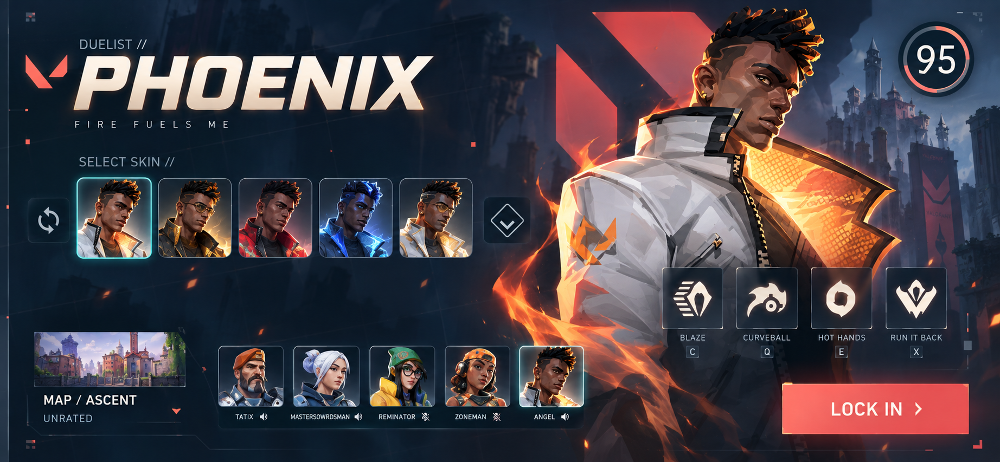
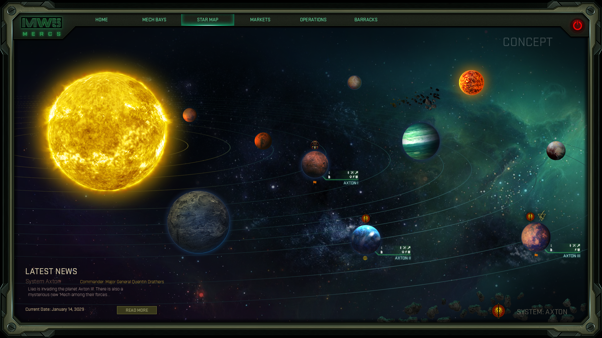
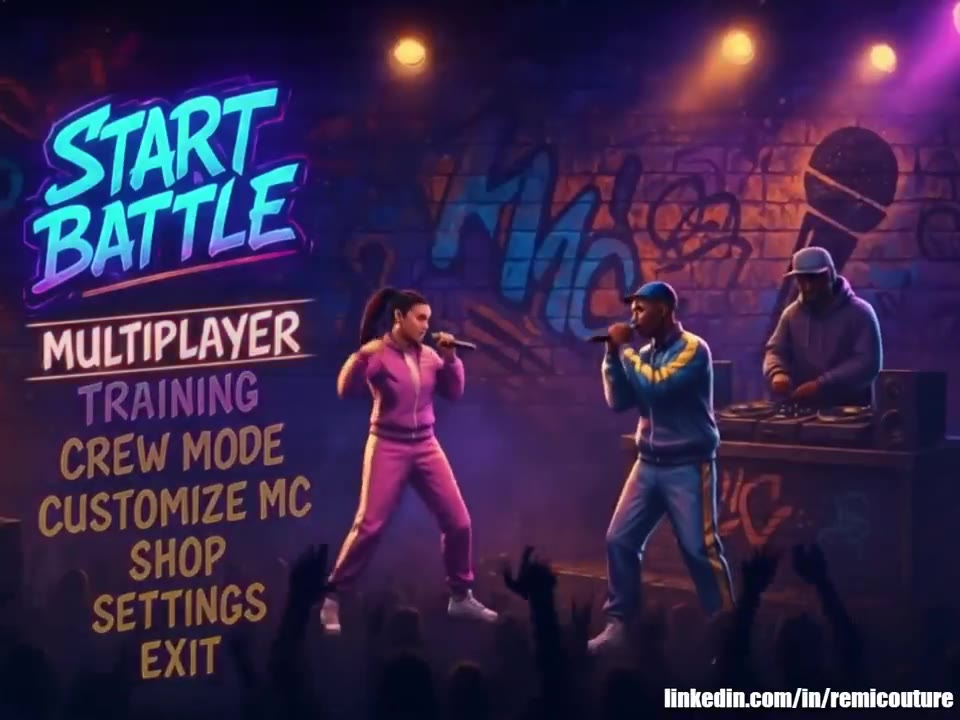
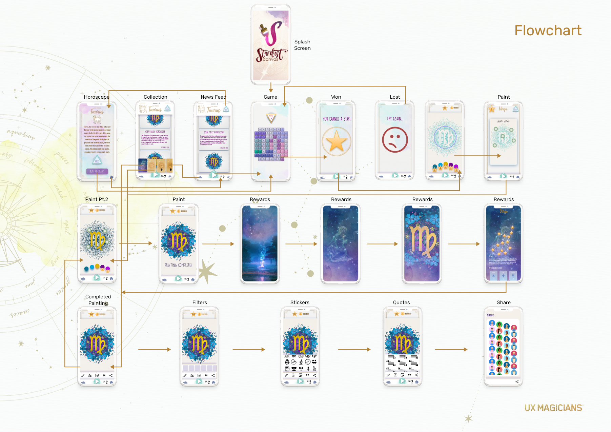

THE PORTFOLIO · UI + UX
The work,
in one place.
Case studies and UX walkthroughs, section by section. For the full record of credits, live components and working files, see Work & services ↗
My game
Designed and developed by me, in production now.
MY GAME · DESIGNER + DEVELOPER · COMING TO STEAM
Norman Ascension.
One life ends. Your House continues.
Normandy, 1066. An online multiplayer medieval life and dynasty RPG set in a persistent shared world. You begin as an unknown eighteen-year-old with modest means and a name few remember. Work, trade, serve, break the law or practise your faith; marry, raise an heir, and carry your House into the next generation.
I am the game’s designer and developer: the life and dynasty systems, travel between Norman towns, markets, crafting and contracts, player chat, letters, factions and marriages between player Houses, asynchronous caravan interceptions, succession, and the House Chronicle that records each family’s story.
Game design, UX / UI & development · Strategic Sloth LLC · In development
The film and screenshots are unretouched in-engine captures of the game world: day and night, weather and the four seasons.
70-second in-engine timelapse · Press play to load · No sound
Studio work
Shipped with the teams I worked inside, 2006 to 2025.
STUDIO WORK · 2006–2025 · PC, CONSOLE, MOBILE, VR
Twenty years of credits.
Shipped with the teams.
Twelve studios, from Club Penguin at Disney to three years on Squad at Offworld: MechWarrior 5 at Piranha Games, Dauntless at Phoenix Labs, client projects at UX Magicians, and UX Director across nine studios at AppLovin.
Every title opens its own set of screens.
Artwork and trademarks belong to their owners.
STUDIO WORK + CONCEPTS · SQUAD · 2022–2026
Faction identity.
Every detail connected.
Your faction, your equipment, your next decision. Explore the original customization design and three new companion concepts built around the same military visual language.
Original: 2022–2025 studio period
Companion concepts & UX walkthrough: 2026
My apps, tools + plugins
Products I designed and built myself, shown running.
MY OWN PRODUCTS · DESIGN + CODE · STRATEGIC SLOTH
Designed it.
Then built it.
A writing workspace on an infinite canvas, a property app that moves between a 2D plan and a 3D walkthrough, a game UI production tool, and a controller-navigation plugin for Unreal Engine. SliceForge and Focusrail are live.
Web apps in React and TypeScript · Unreal Engine 5 plugin in C++
Recordings and captures of the running products.
Training + product design
Learning interfaces and product UI, where clarity matters more than spectacle.
CASE STUDY · CYBER TRAINING + SIMULATION
My approach to
training interface design.
My focus: learner onboarding, decision hierarchy, and the handoff from a learning path to its first activity. These studies show how I compare directions and make the next action clear.
UI / UX design & interactive prototyping
Design examples with sample content. The globe and minigame are working frontend prototypes.
60-second motion showcase · Press play to load · No sound needed
CONCEPT STUDY · PRODUCT UI + UX · 2026
Trust the next step.
Build the next skill.
Fintech that makes the commitment clear. Cybersecurity learning that makes the reasoning stick. Two new concept studies connecting polished product interfaces with the decisions, feedback, and recovery behind them.
Independent portfolio concepts · 2026
Inspired by prior experience. Fictional products and sample data.
Game UI concepts
Concept studies, each with a UX walkthrough.
CONCEPT STUDY · GAME UI + UX · 2026
Before the battle.
Make the choice clear.
A medieval class-selection concept, revisited as a complete preparation journey. Preserve the steel, smoke, and heraldry. Give every decision a clear role, an explicit state, and a way back.
One starting concept · Three new companion screens
AI-assisted visual exploration with a proposed UX study. Original date unconfirmed.
CONCEPT STUDY · SPORTS UI + UX · 2026
Matchday energy.
Clear player decisions.
Two sports. Four screens. A study in cinematic UI art and the decisions behind team preparation—from a hockey line swap to a soccer lineup that needs one more player.
Independent AI-assisted concept study · Fictional clubs & athletes
Inspired by AAA sports presentation. Not commissioned or endorsed by EA.
Process + working files
The files behind the screens: flow maps, wireframes, UI kits and reviews.
FIGMA WORKING FILES · 2021–2025
Open the file.
Zoom in.
Forty-four close-ups from seven sets of working files: a mobile shooter front end taken from flow map to specified UI kit, an AI game-creation platform, new features for a live crossword game, and four prototype rounds of a card battler.
Exported page by page from the working files.
Not tidied for a portfolio.
From the people who managed the work
“UI, UX, illustration and implementation Remi was a one stop shop to get stuff done. Strong recommend, would hire again.”
“Remi created an entire UX workflow and pipeline neither of which previously existed in any form at the studio. … not only up to the task of making the game more playable, but to also create entire workflows, that are still in use today.”
“Remi has a fantastic understanding of UX/UI needs in gaming. Working with him on my project was not only exactly what we needed, but was informative and a great learning opportunity for my team.”
Browse everything
The whole collection, three ways.

START HERE · SELECTED WORKSee the work.
Explore the thinking.
Eleven curated collections with original screens, UX walkthroughs, playable concepts, and before-and-after visual refinements.
Explore selected work



Follow your curiosity.
Scan project cards, filter by discipline, and open the work that catches your eye. A visual overview for exploring at your own pace.
Browse the galleryTake the longer look.
A full-screen sequence of game interfaces, motion studies, and work from the archive. Browse the full collection one screen at a time.
Play the slideshowLooking for something specific?
Jump straight into the guided showcase.
Crypto wallet, exchange, and transaction UX.
Cybersecurity · Signal ↗Gamified learning, practice labs, and feedback.
SQUAD conceptsMilitary customization, faction identity, and matching 2026 companion concepts.
UX & player journeysFlows, decisions, recovery paths, and the structure behind the screens.
Game UI & visual craft2020–2021 layouts alongside their 2026 color refinements.
Motion & atmosphereMenus, inventory, and worlds brought into motion.